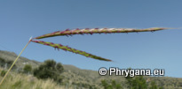
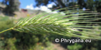

STAPF in PRAIN")
| PHRYGANA | Fauna | Flora | Galles | liste des espèces |
contact -
info - commentaires phrygana1 (at) gmail.com |
| Particularités crétoises | nouveautés | Mines | ressources naturelles |
| les Poaceae de Crète |
|
| tribu des Andropogoneae | ||||
| En Crète, les Andropogoneae comptent au moins 11 (sous)espèces entre 10 genres | ||||
|  |
|
|||
| Andropogon distachyos | Hyparrhenia hirta | |||
| tribu des Poeae | ||||
| En Crète, les Andropogoneae comptent au moins 57 (sous)espèces entre 18 genres | ||||
 |
||||
| Briza maxima | ||||
| tribu des Triticeae | ||||
| En Crète, les Triticeae comptent au moins 34 (sous)espèces entre 8 genres | ||||
|  | ||||
| Dasypyrum villosum | ||||
| 17 avril 2012 |
| © paul fontaine -- © Phrygana.eu 2007 -- 2013 |